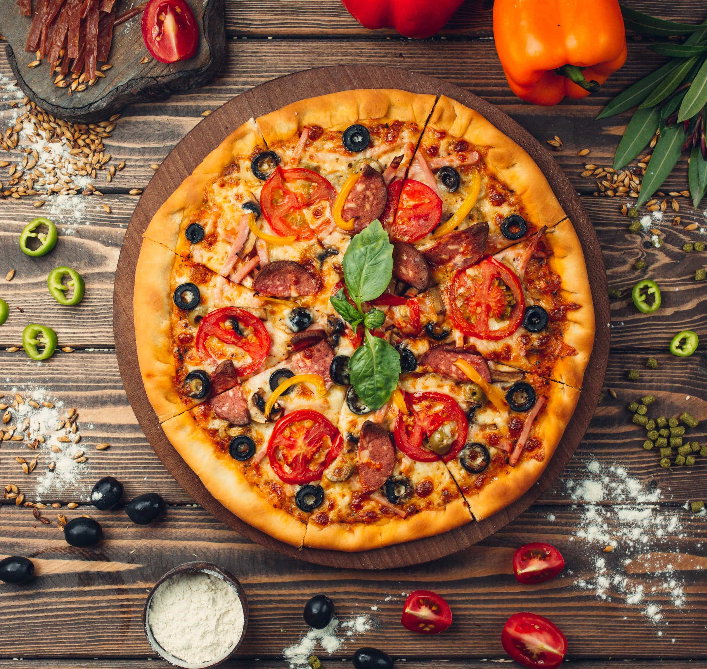
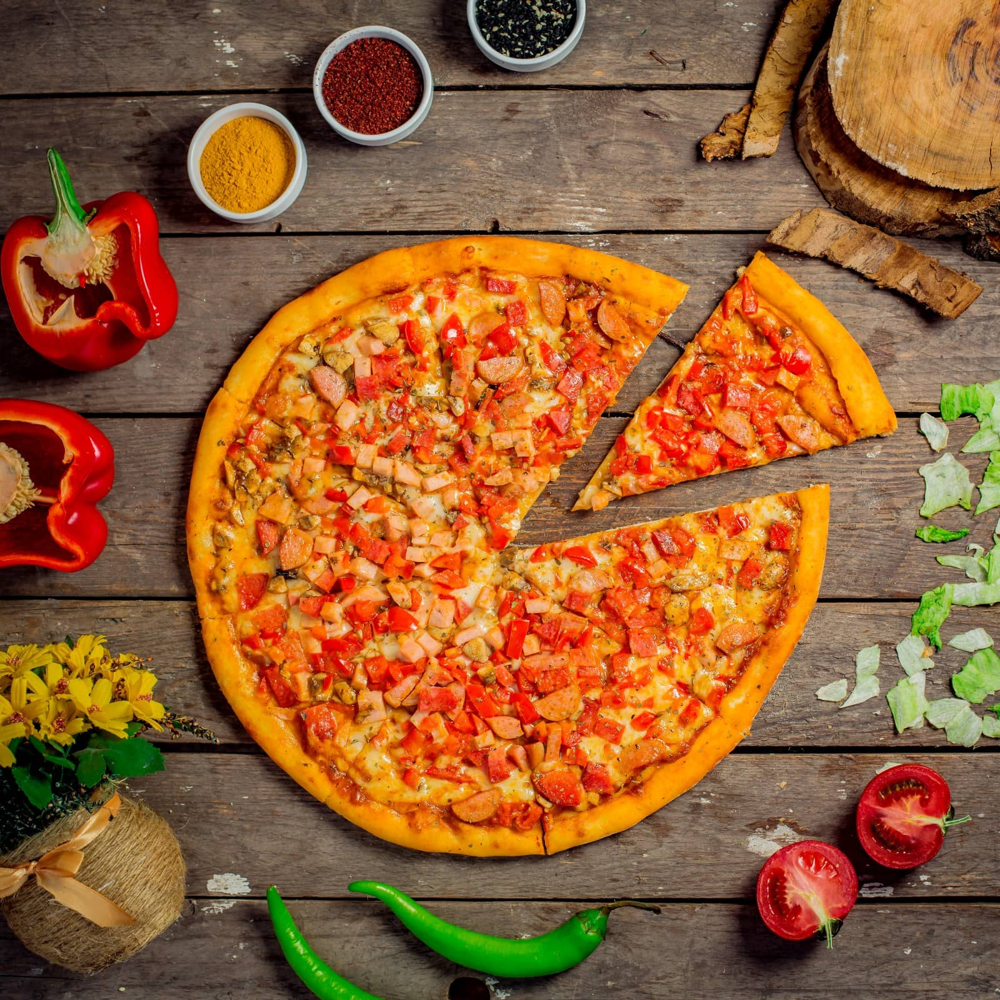
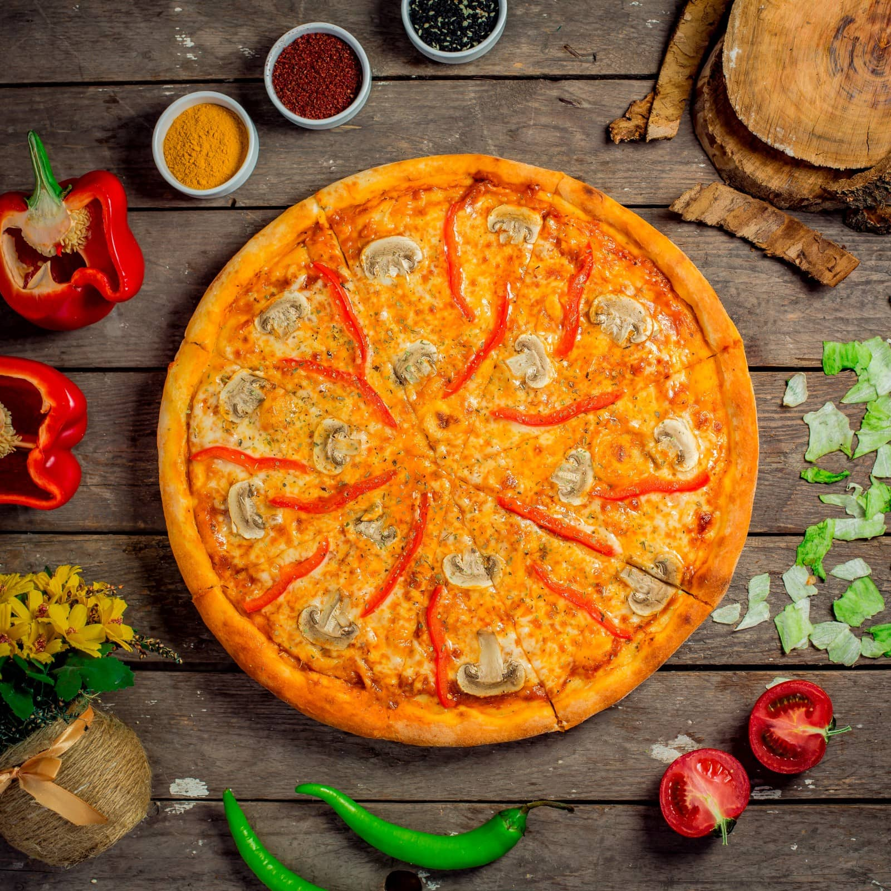
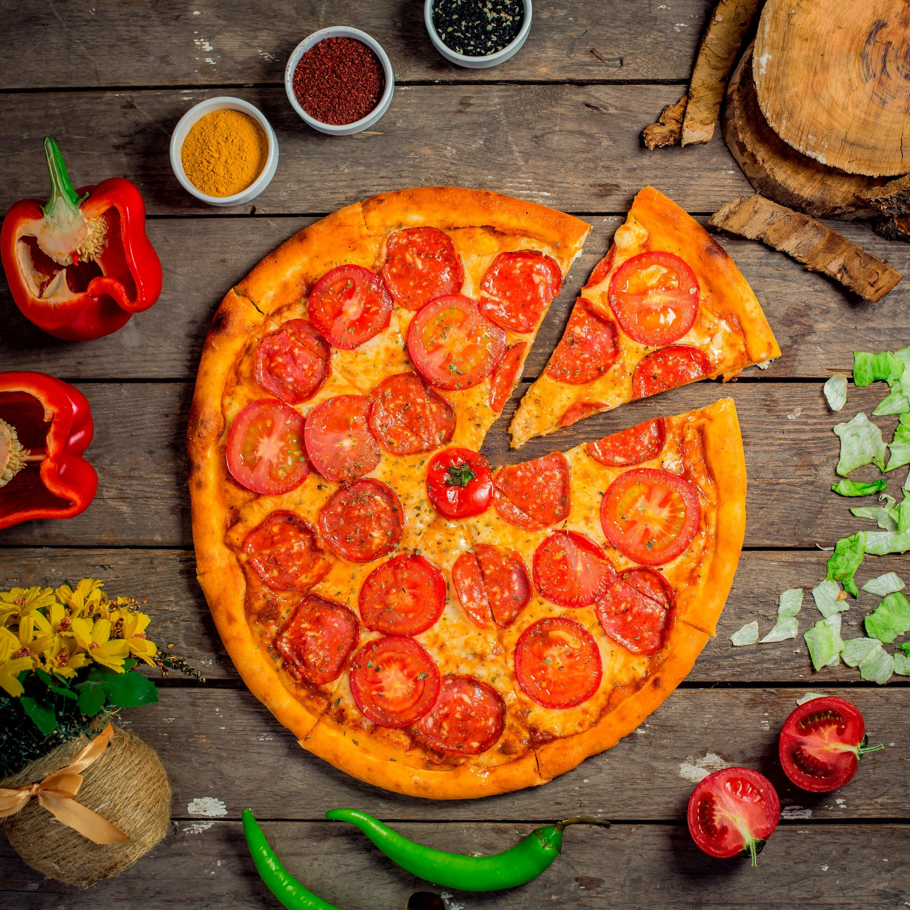
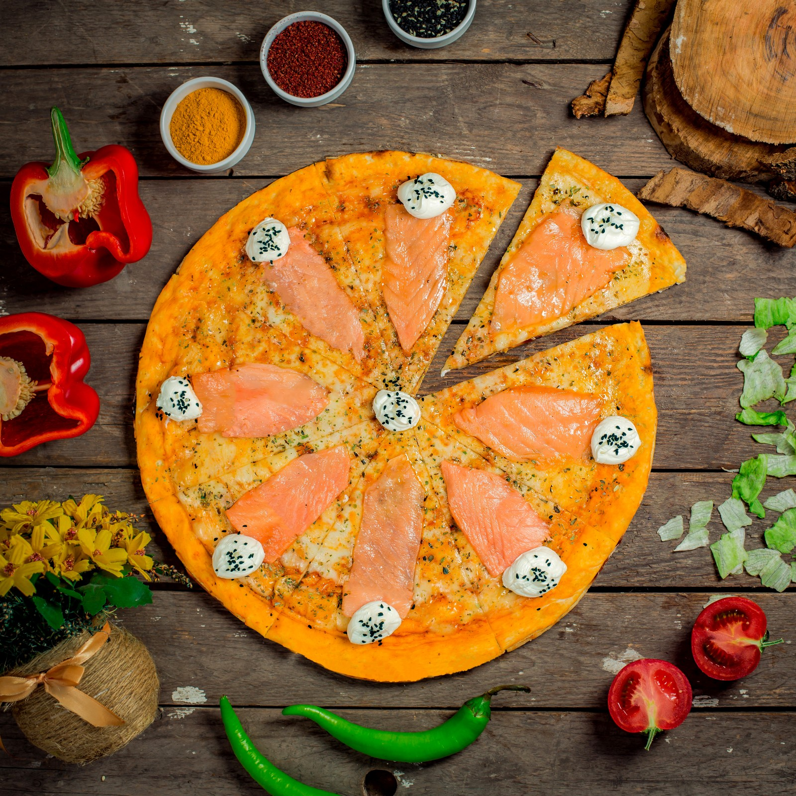
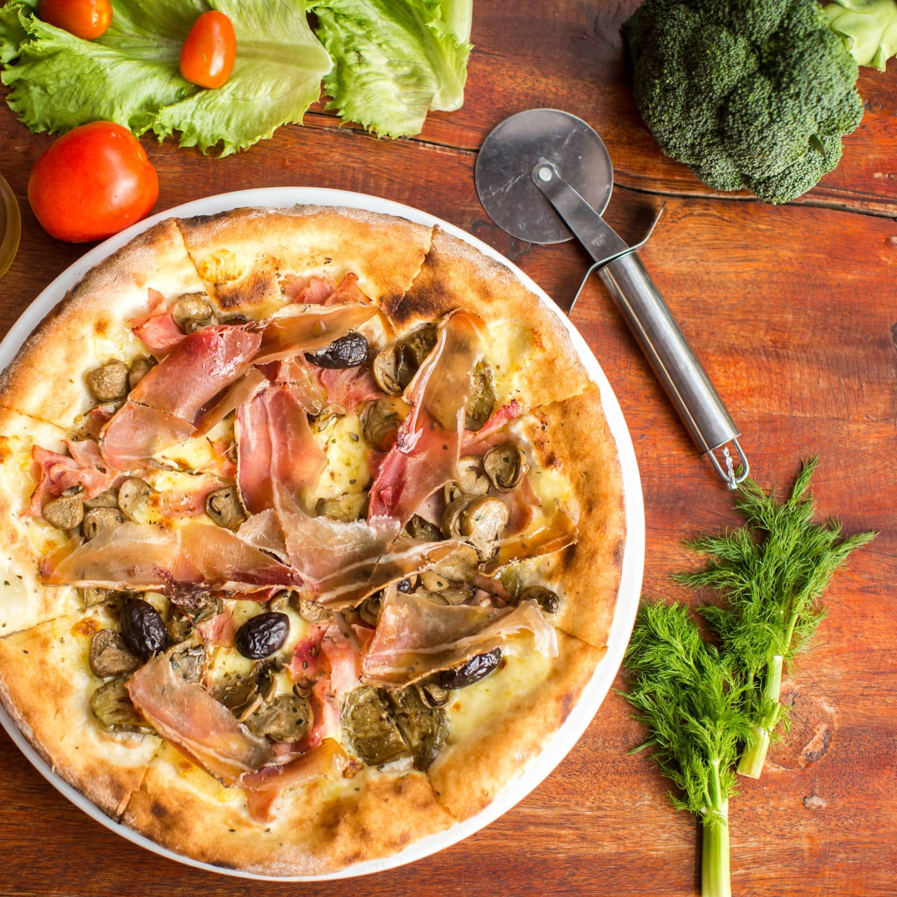

Piacere Pizza
El placer de comer una buena pizza
Pizzas Masa Madre
     
¿Que es la Masa Madre?
La masa madre natural es un fermento compuesto de harina y agua que no contiene ningún tipo de levadura añadida. En la propia harina hay multitud de levaduras y bacterias que provocan la fermentación de las masas de manera espontánea. Esta forma de fermentación, tan antigua como el pan de masa madre que con ella se elabora, aporta un sabor y aroma especiales a las masas y ayuda a controlar su acidez.
Al contrario de lo que podamos pensar sobre la masa madre natural, su elaboración es sencilla, al igual que su conservación. Cualquiera, con un mínimo de interés, puede prepararla sin esfuerzo ni conocimientos específicos. Lo único que se necesita es paciencia, ya que el proceso es lento, y un poco de atención semanal, ya que hay que “alimentarla” para que no se eche a perder y dure toda la vida.
Pedidos
Trabajamos con la modalidad de pedidos con anticipación, ofrecemos productos de pizzas calientes a traves de encargos y asi entregar por delivery con su respectivo costo de envio. tambien ofrecemos productos congelados con disponibilidad horaria en todo momento. Puedes hacer tus pedidos a traves de whatsapp o a traves de la pagina web
Nos encontramos en la zona de tres cruces en Montevideo, Uruguay
COMPRAR